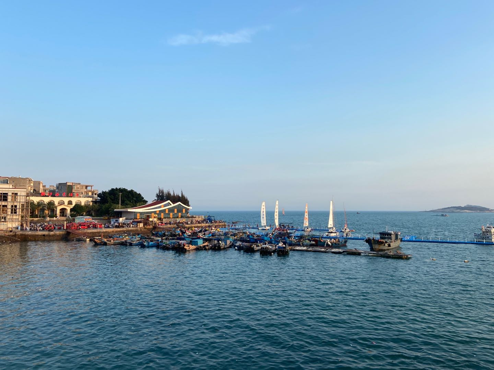

关于近半年来的工作总结
2020大概是人生截至目前为止最混乱的一年。年初和家人拿着马航的机票一路向南，中转KL后在Bali度假一周，每天听澳大利亚人与美国人讨论苏莱曼尼被杀云云，听CNN的现场记者口胡no evidence of human-to-human transmision云云；刚回国就赶上了COVID-19的outbreak，微博和wechat上小道消息满天飞，感觉the whole world is in chaos。而我和大多数中国人一样，度过了一整个躲在家里人心惶惶的二月；中国这边pandemic稍有好转，美国的pandemic已经呈现出无法控制的苗头，自此中美口水战一打小半年，我也趁疫情好转的间隙跑到了上海。
按照之前的规划，我应该在今年二月初顺利完成大论文的实验部分，五月份之前完成论文投稿NeurIPS-2020，然后领双证顺利毕业，去Scandinavia自驾或Philipines考AOW，最后回到深圳开始当社畜。然而现实总是比较残酷，眼看着自己想的idea落到实验层面效果一筹莫展，眼看着论文写到一半心态崩溃最后逐渐放弃投稿，眼看着疫情的来临让我除了躲在家里以外无处可去，眼看着自己的日程被无比冗长繁复的毕业答辩流程堆满，好像时间只是一晃就到了毕业前夕，而我手边的事情依然多得让我手忙脚乱 & 心烦意乱。
最近几天作者又联系我重新确认了通讯地址，看着自己的名字被加到Acknowledgements，这是本渣唯一参加今年ICML的途径了（#捂脸
我也是在最近开始慢慢意识到自己一点都不擅长并行处理问题，相比于最近手上总是有超过十个文件需要提交/检查/签字时的抓瞎，我更喜欢的是一段时间只有一件大事需要我全情投入去做的专注感。这也是为什么当疫情来临所有人都在抱怨在家quarantine有多么憋屈时，好像只有我很享受这段quarantine的时光。所以仔细想想在这段突然多出的自由时间里，我好像还是做了一些事情的，结果好坏参半吧，总结如下：
一月初，帮PKU董老师的书做external reviewer，这本书最近已经通过Springer出版，并将在今年的ICML会议上发售，作为从未参加过ICML的人，还是非常感激去年一段时间在公司的历练，让我有机会走出自己的舒适区，参与一些足够有趣的工作中。
一月初和六月初先后几次搞了些赚钱的副业，quite fortunately这些副业并非止于铜臭味的交易，反而让我学习/温习了不少东西，让自己保持mentally alert to comfort zone overfitting。
三月初接到一个不知名journal的paper-review request，本来由于方向不完全对口没有很想接，后来和师弟聊了下，他比较感兴趣，干脆接下来用心读了两遍，又和师弟讨论了几次后写了长长的feedback。
去年回到学校以后，有感于在公司实习时用到的分布式RL系统的精妙与复杂，想要自己实现一个原理相同但更相对简单的版本，一直苦于没有时间；三月中旬的一天由于大论文实验受挫，学了一下午Linux C编程后开始动手写这个简化版的分布式RL项目；这个项目大概是我自己搞过的难度最高的项目了：一开始用Flask做server，用pb通讯，外加互斥锁同步完成了最初的版本，在服务器上开8-16进程实测GPU利用率非常低；分析了若干问题后重开分支把Flask换成了brpc，把互斥锁换成了C++ STL里的stomic_int，之后写到一半不知道lock-free怎么解决读写同步问题，于是该项目被长期搁置。想想自己一时兴起搞得东西，如果初始期望值太高，遇到困难后得不到外部激励，结果大都如此。
半年的时间里，磨磨蹭蹭地学完了Stanford的CS224n与MIT的CS 6.824。说来惭愧，直到快毕业了还在学这些本该是本科大三大四年级的人该学的课，一定程度上是因为我一开始的盲目与短视，认为我做CV或RL，那就只需要学CV或者RL的东西就好了。在工作中频繁遇到自己不懂的领域常识后，我慢慢意识到这种思维如坐井观天，在企业里做算法研究，首先要对整个ML community有一个高屋建瓴的把握，其次要熟悉算法用于大规模场景时的边界问题。前者需要知识广泛地覆盖ML的各个子领域，至少要能做到出去开会和别的领域的人一起吹牛逼不会露馅的那种程度；后者就会经常碰到distributed system的各种问题。我也是学了CS 6.824之后，才开始慢慢理解在百度实习时做的东西的大致原理，分布式架构着实是一个十分inspiring的领域。
四月份，基于tushare做了一个小的深度学习量化选股项目，整体项目包含数据下载、特征工程、模型训练，线上选股以及 （小规模） 回测等内容，模型实验包括普通LSTM、GRU、不同版本的Attention以及seq2seq，最终发现越复杂的模型效果越差，且代码量远大于我一开始的预期，绝大多数的代码都是各种数据特征处理或格式转换，最近女票还会经常让我更新这个repo里的选股结果，算是写了个有点实际用场的小东西。
五一期间跑了一趟女票老家，顺便去逛了莆田的动物园和漳州的东山岛，最后事实证明，东山岛这个名气不大的小岛美景却远超期望，可惜去的时间太短未能尽兴。
这条路貌似是左耳的拍摄地之一，一派民居毗邻海边，颇有文艺情怀
东山的老房子大都依山而建，爬到山顶向下看有点摩洛哥的感觉，我们登顶时恰逢落日，美不胜收
这里的海非常蓝且比较干净，在国内的海滨实属难得，这篇角落停了不少帆船，对比了一下之前去黑山的照片，也有点异曲同工的感觉


关于职业生涯与未来发展
关于家庭与生死
数了数至今为止住校的时间已经超过了12年，从12岁到24岁之间我在学校的时间基本都是住宿舍的状态，宿舍生活几乎占掉了我目前为止一半的人生。这段不算短暂的人生中，有被当成不合群的nerd被孤立过，有遇到过像奕阳和旭东这样特别棒的室友、也有遇到过每天与室友作息不同毫无交流的情况。我还记得12岁刚开始住校生活时对独立生活的热切期待，12年后，对这种由学校随机选择的几个人住在同一屋檐下的制度，我的厌倦感却与日俱增。
2019年4月跑到深圳实习，第一次自己租房，由于从小到大的海洋情怀选择了一间租金不贵环境又特别棒的海景房，唯一的缺点大概就是离公司距离比较远，每天上班需要舟车劳顿地公交换地铁花掉四五十分钟。室友人都很不错，每个周六我一般会放纵自己吃一顿汉堡王，然后去南山游泳馆游上4到5km，晚上回到家和室友一起看看粤语电影，偶尔玩下室友的Ukelili。广东是可以数着台风过夏天的省份，我的床又贴着一面大落地窗，台风过境于我是再好不过的白噪音，因而度过了不少画船听雨眠的晚上，总的来说度过了一段比较愉快的时光。
当初看房最爱不过这个开放式的大阳台，这一侧向外看去是南山和月亮湾公园，另一侧外面是蛇口港的海。